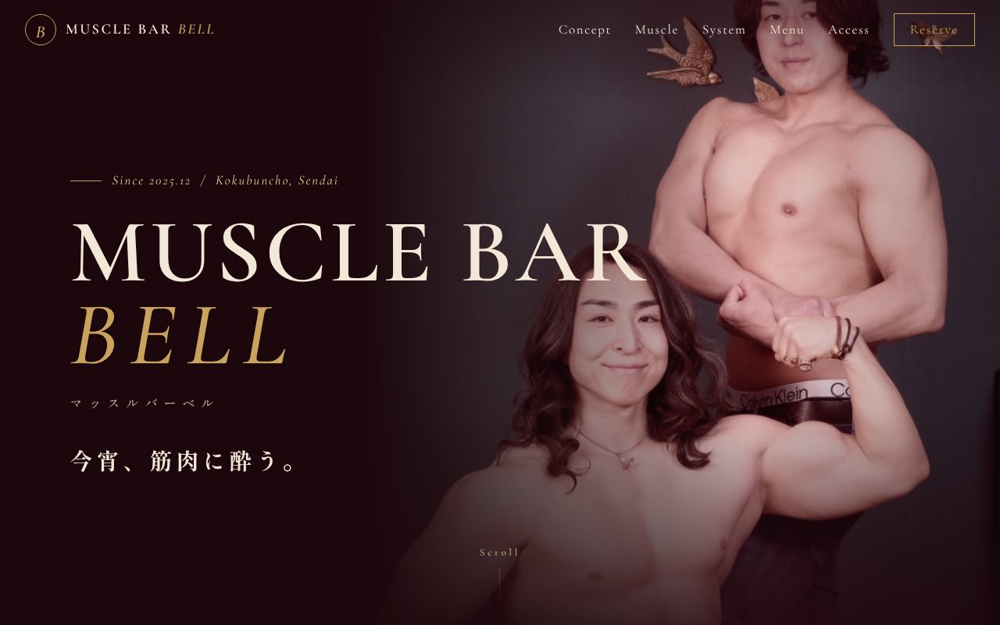
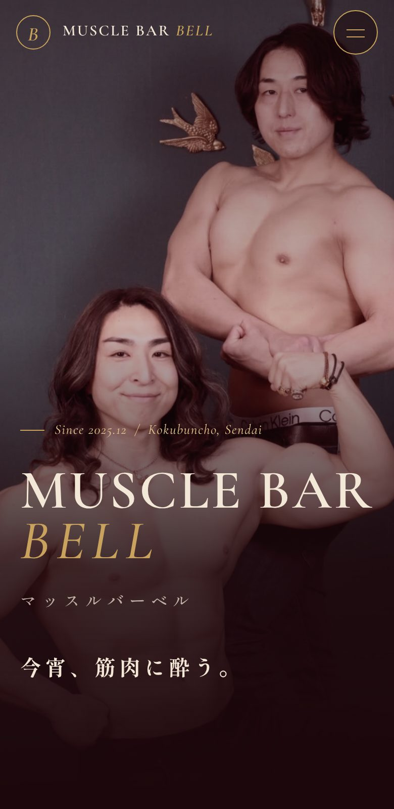
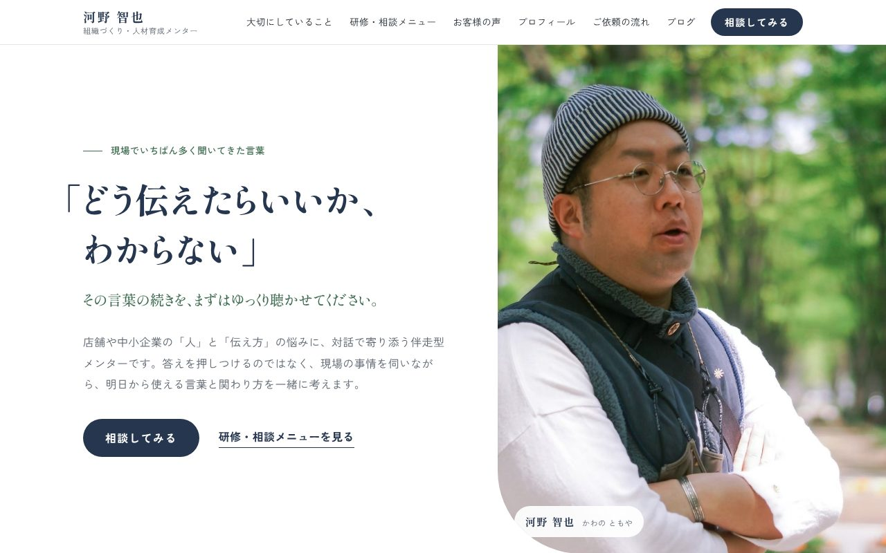
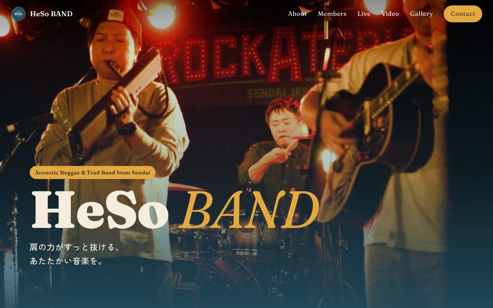

バーの公式サイト
マッスルバーベル仙台・国分町
店長のご希望だった「大人の雰囲気」に合わせて、深いワインレッドとゴールドでまとめました。コンセプト・キャスト紹介・料金・メニュー・アクセスを1つにまとめています。
お知らせや写真は、店長がスマホの管理画面からいつでも書き換えられます。
サイトを見るお店の仕事で手いっぱいなのは当然のことです。ひとりで回しているお店や、数人で切り盛りしているお店に、ちょうどいい形を一緒に考えます。
どれも、お話を伺うところから制作・公開、その後の更新まで担当しているサイトです。


バーの公式サイト
店長のご希望だった「大人の雰囲気」に合わせて、深いワインレッドとゴールドでまとめました。コンセプト・キャスト紹介・料金・メニュー・アクセスを1つにまとめています。
お知らせや写真は、店長がスマホの管理画面からいつでも書き換えられます。
サイトを見る
個人事業のプロフィールサイト
「話しやすさ」が伝わるよう、写真と言葉づかいを中心に組み立てました。お問い合わせはGmailに届き、一覧表にも自動で記録されます。ブログを書くと、トップの新着欄も自動で変わります。
サイトを見る
バンドの公式サイト
仙台のアコースティックバンドのサイトです。ライブ写真を大きく使い、メンバー紹介・ライブ情報・動画・ギャラリーを1ページに。出演のご相談がしやすい作りにしています。
サイトを見るお店の紹介、メニュー、営業時間・定休日、地図、お知らせなど、お客さんが知りたいことをスマホで見やすくまとめます。写真や文章の準備から一緒に進めます。
「来週は臨時休業」「新メニューが出た」といった変更を、LINEやメールで伝えてもらえれば反映します。作りっぱなしにしないことを大事にしています。
ひとつのお知らせを、インスタ・X・スレッズそれぞれに合う文面に整えます。毎回一から考える手間が減り、ホームページとSNSの情報もそろいます。
店長さんがスマホで書き換えられる管理画面、イベント告知のページ、お問い合わせフォームなど、「こんなのがあったら」に合わせて相談できます。
お店の雰囲気、来てほしいお客さん、いま困っていることを、お店に伺うかオンラインでお聞きします。
載せる内容と見た目の方向を、たたき台を見ながら決めます。お見積もりもここでお出しします。
実際に動くページを作り、スマホで確認してもらいながら直していきます。
納得いただけたら公開します。お店のSNSのプロフィール欄にもリンクを載せましょう。
お知らせの更新や、季節ごとのメニュー変更など、公開後もLINEで気軽にご連絡ください。
河野 智也かわの ともや
仙台在住。携帯キャリア代理店で17年、店舗の現場で接客・スタッフ育成・マネジメントに携わってきました。いまは「組織づくり・人材育成メンター」として、店舗や個人の方の相談に乗っています。
ホームページづくりでも大事にしているのは、いきなり作り始めずに、まずお店の話をじっくり聴くことです。何を伝えたいのか、誰に来てほしいのかが整理できると、ページの中身は自然と決まっていきます。
20年以上バンド活動も続けていて、ライブやイベントの告知の大変さも身にしみています。ひとりで担当するので、最初から最後まで同じ人に相談できます。
人材育成メンターとしてのサイトを見る載せる内容やページの数、公開後の更新の頻度によって変わるため、お話を伺ったうえでお見積もりします。ご予算に合わせて、できる範囲から始めることもできます。
大丈夫です。写真と、伝えたいことを話していただければ、文章の整理からこちらで進めます。更新したいことも、LINEやメールで伝えていただくだけで構いません。
このサイトと同じ仕組み（GitHub と Cloudflare などの無料枠）を使えば、表示するためのサーバー代はかからずに公開できます。お店専用のアドレス（独自ドメイン）を使う場合は、その費用が別にかかります。
できます。いまのホームページを拝見して、直す・作り直すなど、合う方法をご提案します。
お話はオンラインでも伺えるので、まずはご相談ください。お店に伺えるのは仙台近郊が中心です。
「まだ作るか決めていない」「話だけ聞いてみたい」という段階でも大丈夫です。
LINEからのご相談にはLINEで、フォームからのご相談にはメールで、河野からお返事します。お店のインスタなどがあれば、URLを添えていただけると話が早いです。
お店の合間に、LINEでさっと相談したい方はこちら
LINEで相談する友だち追加して、そのままメッセージを送ってください。お店の名前と、気になっていることをひと言添えていただけるとスムーズです。公開後の更新のご連絡も、このLINEで受け付けます。